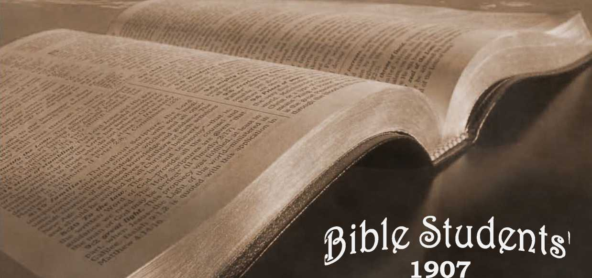

No. 79—The Lost Key of Knowledge. What Would Satisfy Jesus for His Travail of Soul at - Calvary?
OLD THEOLOGY QUARTERLY,
FRIXASIT STUL-lr'- IW THZ SOUFTUItlS
"ff-'ac irnto you, Durtcmr of the Law, because ye have lahtn away the Key af Knowledge: ye» entered not yoteraelvcs. and those approaching yOM hindered."— Lake IliSa.
We are living in a pre-eminently practical day, when result! are sought rather than doctrines. Indeed, in but few Christian pulpits are‘doctrine* ever considered in these later years. Doctrinal preaching is considered obsolete, and has beets replaced largely by what is termed practical preaching. In 01 her words, the preaching of good works has taken the place of the doctrines preached by Jesos and the ajxiillcs. The reason of tins is not far to seek: talemcij'nicn, able ones of all denominations, in the pulpit and in the pew, arc heartily ashamed of the doctrines cwFes-icd in their creeds. The preachers, therefore, are glad enough ns let these alone, hoping that their congregations will forget them, and especially that they will not ask th-m any troublesome questions rapecung thm.
A s ■ result we have throughout the civilized world to-dav jutt what the Jews had at the first advent of our Lord—namely, a form of godliness without the power. Our Lord's discourses and prabies continually bora whims to the tact that the jews ot ms day, citpeeialiy the prominent ones, were outwardly pious, ""zealous tor God's Law, but inwardly ravenous wolves . and full ci all manner of corruption. Our Lord upbraided the leaders for their tong prayers and affectations of piety, which were entirely contradicted by their c indui 1 in dally life; their selfishness, which would lead them to take advantage of the widow, to grasp for property, and which would bind Heavy burdens of Law observance up-yn She weak arid the poor, fo their discouragement. Our Lord declared to them how they had made the divine Law of nene effect through their traditions—more than this, had made God and his Law abhorrent to the poor and the ignorant by exaggeration. For instance, the Law of the Sabbath was ex-aggcralrd and is still exaggerated in the 1 almud, wllidl teaches that to rub wheat between the hands and to
1 blow nwny 1hc chan in order to cat Ilie kernels would he unlawful, h violation of the Sahboth Day, because-il would b- threshing and wiunowtng on a small scale.
. Similarly, to hunt a flea would be a violation of the Sabbath Law, because it would be hunting on a small scale.
Taking Away the Key
[Thus did the Doctors of the Law in Jesus' day, by the tnlislilution of traditions instr ad of the divine Word, misrepresent the character of God and turn the attention of Ihe people from him. Thm did they take away the "Kev of Knowledge," for I he "reverence of the Lord 1'1 the begTnning of knowledge" Note our Lord's wards, “This is life eternal, that they might know llice, the only true God, -ind Jesus Christ, whom thou hast sent'* (John 17 tj.) In a word, God's creature* need to know him well and truly tn order to appreciate him snd m order to have confidence in his gracious promises. Such a knowledge is necessary to a true worship such as the Lord appreciate*, for. as the hlaster laid, rhe Father seeketh such to worthip him a* worship him in spirit and in truth. (John t.Zi, 23.) Whoever, therefore, miirepresenu the divine character and the divine plan is taking sway the “key of knowledge" of God. This was the crime of the Doctors of the Law, wlikh their hypocritical profession* and prayers only brlped to aggravate: for the common people, relying largely upon the holy profession* and. teachings nf those leaders, were the mtuc thoroughly drlnded and the more thoroughly alienated from God by reason of their professions, of sanctity.
Our Lord's words, "Woe unto you, Ductors c£ the Law," had a fulfilment, icra. Certain woes fell with special weight upon this very das* but shortly after out Lord's predicrioi!. Very soon a period of disintegration set in. which affected everriliiug and every prospect of the wealthy and professedly religious class of the Jews, especially the Ductori of the Law. This led to anarchy anti nliimattiy the destruction of tteir national polity, A. D. ptx True, it meant dirt iribulmwo to all people; but. as nlvrays. those mail intelligent and in the high stations of life, must hart suffered propw-tkmately nwt in the stress which came upnri all the people in fulfilment of the prophecy,—"Wrath is coms fi upon thi* people to the .utterrnori,"
The Gospel Age Parallel
On previous occasions, and in Veits. IL and IIL of Scitrruu Studies, wc have shown from the Scriptures that the Jcwiih Age and people represented typically Spiritual fsrael and this Gospel Age; that the Jewish Age bejjart with the death of Jacob, the G-tpd Age with the death of Christ; that the former was established in the twelve sons of Jacob and Ute latter in the twelve apostles of the Lunh. We bare also shown ihat the former had typical sacrifices and sin-offerings, while the latter ha* a untypical or “bciicr sacrifices than those;” that the fcirmcr had a typical priesthood in Aaron and hit sons, while the latter lint! tin arititypical priesthood, called by the Apostle a "Royal Priesthood," of which Christ is the Chief Prien and hi* faithful followers the Under-priesthood. We have further shown that, fheie Ages are of the same length, and that, as the Jewi»h Age ended with the harvest in which our Lord was present in the flesh as rhe Chief Reaper, so this Got pel Age will end with a harvest in which cur Lord a* a spirit being will be prevent ai the Cbkf Reaper, gathering the wheat into hi* gamer, before the great itrne of trouble, the figdratrve burning-day coming upon the world in general—"a lime of trouble such as was not since there was a nation." 1 Dan. t? :t.) V<e have seen that ihe trouble-day with which ihc Jewish Age ended is paralleled exactly In lime and in character by tlic period of trouble which will consummate thi* Age.
In harmony with these parallels it 1* not wonderful that to-day we find amongst nominal Christian people (Churchianity) conditions in many respects corresponding tn the conditions described by emr Lord amongst the
ble for hint to really knew God, wbon to ;V knr-v would rti'.ply life eternaL EJeforc die Key o: KiarwJedyte Eoan Ite found and used, and Access i- | iD right appreciation and worship t>f God, this doctrine and other tiir.llar supentitions of-tbc "dark aifr,” mint Le RO-ttcn rid uf We think Qod that in Illi providence-sornc to-day, Isrjfliieia indeed fn wlnam there is hl> guile, are being helped to a knowledge by a mwsoge of Ilir i-reif TcOchar, even as a lit de i-f 1 .r.itlitca in deed were I aught of God and inducted into a ...........
and love of God. despite the conduct .mil f:i.' r teachings and wrong attitude of the Dodcrt J Law at the first advent.
Il shouJij be noted that our Lord :!■■-■« r.. .1 intirnale ihot the Doctors of the Law them-.-!•. 7, ■ : . entered into uxt knowledge and were keeping olhert out of it*, bm, on rhe contrary, that while they were m - favored position :o supply the Key and to enter fn arid to tfijoy T.le kunv. >dire. they were not only not ilolrig ■■ .. but ira avoiding the know ledge they were hindering nifiee* whi> were m qilr-4 uf it. So to-day we are im!. to ; L under. Stood t>s imirmitj-ng that, the preachers ol Chr, Heiidom. ■ have ihc true knowledge and are wiiliholding it front 1H: people, but the cont.'-ary—that they an- . m>rtiued. that they know not God, and that therefore the divine-pian o. tiourullir.-,-. mercy for the sins of the wlPdc world, is hidden from their view. As a dass ihrv know mH God —Ihcy mrsuixlerfland llini. But, inileid ■! ■■ ■■ ■ t:ing for the Kry And citering in, and Seeking to J' ml others, io enter in, have they not abandoned die Word of God ana taken Up with Higher C'iticism and !'■■■ iulinn. and,-arc they tux priding these who Sock up them for etmtisc! in the same dfrectian? Why do nut these cdu-r.ir^.i m-t> <>r --rtt oprwvrtflrUy i'.', :L.i :.. : -^:
Of their position and search the Scriptures, I n J by full consecration of their all to the Lord enter into rhe school 0f Chrfor( that they may be inijyht of Diim, that they inajf fiml die Key nf TCjiowledjjc and .-■■■■ ivt in nut-tinu it into the hands of those who Ure ncekitin God, "leeling after him. if happily they niigltl find him," but who arc now being misled and misdirected? Xc our Lord -..ji.l, tiir blind are leading die Lliii.l. and :urely* alt will full inlo ihc ditch. The ditch <>! II;.' djy was the time of trouble which wrecked ihe Jt-w-'h rnrim. Ttie ditch <?f Out day k the- qipp; OJt-iiin,; cfsy rjf trouble, in which i_h: i;■ cndum will be wreckvi! in j .itacJy-sm pf anarchy, accTOdinj to I he Scriptures.
The ImpjrtantB of Knowledge
In worldly mailers th< word knowledge is applicable to any subject which we know and can d-i-m: ■: .nc, but in religions iii.uters the word has a still brosrlcr iiut.in -iflff, aurl applies 1n things that we cannr,: :i-.;|niilly prove, but which we believe on satisfactory tvidemte—as, for instance, 1 know ih.it my Redeemer IKcth.." l-.;iih is ■lie ban i lhis Ictiow)edge—faith ill wh*i m ■ ! !■. vc to
lie a Gc.l inspired revelation of things past ami to eume. This :n.iy rail faith-tnowlcdgc, and Io this the Scriptures everywhere cOntuirzally appeal, a^uring n» that “wriliout failh it ft invpossibic to plcare Godf that, such failh ft ihe lottmhticc of ail oar hope, rhe main-' spring o: all o-or best endeavors, and that according to aur fafih will be ihe results as retprets our present de-velnpoient nf character along ihe lines of riuhirousneiS . ami Liur full ire ilisinmertt of the heivtidy rcwsnl, Jl' it fur this reason that wc arc urged io search the S.-rip- ■ turei and !q study lo show ourselves a ppmw.I workmen, rightly dividimj the Word of Tnuh. and again that we may be ready, able at all Ifmcs, Io give ia him that asketh uf a reason for the hope within us, fjcho, . 5:d’J: j Tim. aitjt: i Pet .vrj) JTc who hm not n knnwledijt of the divine revelation, the di line piaa. can-
Jews in shdr kar.-ei: time. To-thy. ah-tn. we find'an cutward - "ped fovGodznd for-e . • : •* Ira wing nL^q tiyito ihe Lord with ihejipa while the iicarta are far rrotu i.irq—hu i;cd with faitii&n. pleasure am I ■” :Twy Now, atioi wc find hz.ie the people look i ■■ Doctors of Divinity for guidance and instruction; that they great- t ly revervnee them, ami that the latter could have great power if they were in Itarinajjy with Go I—if, behind the ]T' ivctl'V:!, there was* a tnnuriedp- of t ti i.I1-. r’l-r-nctfi' and plan, and if this were impaired io the people who, ICCOrding to the Scrtpturra, are MW Eaniishing— n famine not for bread nor for water, but for the baring of the tnessage of the Lord. (Arturs 3:ti.J This sad arraigiiHicni of the pulpitren uJ <mr day Is a ifunJdcil anil unpleasant task: but It i’ AS proper today u it wu nineteen cenicrtn ajto to ihow thos e him-gcrirtK and thirsting for the Word ol the Lird the real C5UM of their tlifBcaily—to show that the clergy hare taken away the "key of ImowledBc" and are keeping it hill, and that, neither are they lltertisdvei entering tnto the knowledge nor are they favoring, any others eiitcr-ing in. f)n the contrary, they hinder in a hundred ways the spread uf a true knowledge of God and Ids Word uniongat the people.
Whsi tiie Key W*a Lost -
Wr should not be nnderttood as reselling that all the mpomHdiiiy of the loss of ihe Key'of Knowledge belong I to the Gins tian ministers of to'day, neither did -pur Lord charge the Doctors' of the fjw of his day with the full responsibility. He pointed back Bn the lame dau in earlier days, saying,. "Woe unto y.'u! for y.'u build the sepulchers of the prophets, and your fathers killed them.” fv. jy.J Car Lord iczzr.s to have arraigned the tlergy as a class, and to hare held ihe modern repreuentaliveJ responsible, because-' they f.Vt'U evidence of having the same spirit that their prcd-SCCUSOrj Ji; I, even though they condemned stliue of U'L’ir practices. Thus, their fathers kilted the prophets, while they killed the Lord himself and persecuted' hii fol Jowers. Nor should we ynderslsrtd Olir Lord's '-'rcriL to apply :o every insfividcal of ihe Jewish clergy, the Doctors of the Law, but rather that he spoke, of them 11 1 class, ignoring -Jie Jew exceptions. Similarly we hold ihat amongst the teachers of lo-day there are ex-tf?ii-;n5 to the gen-rjj jalc—God Joying atij Gol-fwr-Lnx ::ir.1, ihiTtsieiVca mfvlnj io di Ice Into th* IcnnwIcd^S of GM and to assist JdhcD to cuter in. But surely t?icie ,-iri a very imaU minority, and they ’tc rarely heard ifftm. " ,
The Key of Knowledge of Gotl’f true character was lost long ago, buried under whnt the Lutherans style Hie "dunghrll of Roman decretals." fl was Inst during the Adark aces." Luther ami some oi hit coadjutors did valiantly in striving to recover the Key, nnd at least nt hull! ol the handle. But, alas! little progress has since been made. The key, while recovered. is stfU hidden by a vail, a mist of supers:ition. and folre d&C-trine. Shall we illustrate ibis.* How. -it aik? CoaM any one come l& a knowledge of God—* trot knowledge, an appreciative knowlertffe, a hciely syrnpathy, a trite devotion—while still think inn of God as the all-powerlul Creator, who made mankind fw hia own pl'MSuri-. yet. before man’s -creatinn prepared for the vast majority a place of eternal lornient, manned fire-proof devils and "suppiird wiih fuel trHingh far al eternity? Who thnt has ilmt rhouuht before rus mind, who that believes that unscriptund teaching, could rightly reverence his Creator as a God of justice and of. Tove? Tn pmpnm'cm as ihts cloud of error, this doctrine of Hevils." comes heeween an intelliyerrt mind and its Creator, in that same propertian it will be*impossinot have a Scriptural hope, cannot have the legiiimate result! of such a hope, namely, the anchorage of tba sonl, sure and steadfast. (Heo. 6; 19.) In harmony with this the Apostle points out the fact that the heathen cannot be saved under the call of this Gospel Age. Whatever salvation there may be for them will conic liter under the Millennial Kingdom arrangements, for liow could they at present believe on him of whom they have not heard, since now it has plcaied God to tare only these that believe and whose faith leads to the appropriate conduct outlined in the Scriptures. The more of thu faith and knowledge the Lord's people possess the stronger should be their confidence and the nobler should he their lives. This faith-know ledge is referred to in the Scriptures as the truth, as, fur instance, when our Lord said. "Sanctify them through thy truth, thy Word is truth.” (John 17117.) The message of God received by faith is accepted to be the truth, to be true knowledge, and wherever it goes there must be a sanctifying, separating power.
How forceful, then, is this injunction, “My people perish for lack of knowledge.1' (Hosea 4:4) Nut that we put knowledge an superior to love—quite the contrary; knowledge is the foundation, love is the superstructure, the character development. No one, therefore, can rear a proper superstructure without a proper foundation. The measure of the foundation must of necessity murk the limitations of the building upon it. Whoever has little knowledge of God and hi* character and his Word his proportionately little of the sanctifying [tower of the Truth. If the knowledge does not produce this fruitage the results are even as the Apostle points out in the words, “If I had all knowledge and had not love T should be as sounning brass anu a tinkling cymbal"—it would profit me nothing. (1 Cor, 13:1,) On the contrary, whoever thinks to build up a proper character without knowledge erf! egregiously. The-Apostle seems to point to this fact when he refers (o some as building upon the One sure foundation, Christ J«us, with wood, hay, stubble, erroneous leachings; and others gs building upon the good foundation with ^old, silver and precious stones, representative of the divine truth. And the Apostle assures us that the testing time will come and that.only the latter class will stand the lust, while the former will suffer Ion,, though them-■ selves will bo "saved *0 as by fire." (1 Cor. 3=13-15.) Thus docs he point out the two distinct cluses of the saved ones of this Gospel Age, known in the Scriptures as the "Little Flock’1 and the "Great Company.” It is proper that every child of God should look to it "that he receive .1 full reward” (3 John 8); that he win the great prize, that he be not one of those merely "saved so as by fire,” and who must "come up out of great tribulation,"—Kev. ytig,
Our Lord’s Knowledge Attested *
An illustration of the value cf knowledge is set forth in (he Scripture in the words, "By his knowledge ahull my righteous servant justify many, when he shall bear their iniquities." (Isa. 53=11.) And this surely Illustrates well the principle we have applied in the Scriptures to all the members of thejShurch, the Body of Christ, who arc required to be character copies of God’s dear Son. Note Ine following references to the value of knowledge to Lhe Church, the Elect of this present age. The Apostle speaks of some who "Itave a seal for God, but not ar-cording to knowledge,’’ and dis-‘ tinctly intimate! Ihcir disadvantage in the race on this account. (Rom. 10:2.) The Apostle com mends those who are "full of goodness, and tilled with all knowledge, and able also to admonish one another.". (Rom. 15:14)
And again, he speaks of the advantage secured to those "enriched in Christ with 4JI knowledge" (1 Cor, 1 5.) And again, he speaks uf knowledge coming through the holy Spirit (1 Cor. ta;8), and again, he reproves tome who "have net the knowledge of God/'—: Lor, 15 =34
Again.he points out that God’s grace has shined into our heart! lc^ give the "light of the knowledge of the glory of God," (3 Car. 4:6.) And again, he exhorts to faithfulness "by pureness, by knowledge, by long suffering" (3 Cor. 6:6); and again in faith and utterance and knowledge; and again hr refers to the necessity of cxsiing down all imaginations that would tend to exalt themselves against the knowledge of God. (2 Cor. 10:5.) In his epistle^to the Ephcsiafis he speaks of his own favor from God In reaped Io the knowlcdge-of Christ, the knowledge of the Mystery, mid of the love of Christ which passeth knowledge. (x=t7; 3=4,. 19.} To [lie Philippian* he writes (t:q) urging that they abound more and more in knowledge, and fpeaks. of the excellency of the knowledge of Jesus. (3:8,) To the Colotslmu Ue writes that they should lie filled with a knowledge of.God's will, and make increase in (lie knowledge of God. (tip, to.) He refers lathe treasures of wisdom and knowledge divine which arc hidden in Christ and intended for those who come unto dte Father through him, The Apostle Peter nho trachea that the Lord’s grace comes urto us through the-Itnowledgc of God, who hath called us; and he exhort* that we add to our virtue knowledge, that we may l-e-not barren in the knowledge pi our Lord and Saviour Jcsui Christ.—a Pet. ::a-8. -
Knowledge During the Millennium
As the knowledge of God reaches but comparatively few of the human family during liiin Gospel Age, ami' few, therefore, gain the elemal life, it li of deep interest to all that the Lord’s Word enunciates that it is his. will that all men should be saved [recovered from the-tomb] and come to 1 knowledge of the Truth that iliey-iiiay be saved. (1 Tim. 3:4.) If the knowledge of the Lord is a blessing to us now, and brings with it re sponsibiliiy and great opportunity and blessings present and prospective, it is in lull accord with this that thc-J-nrd here promises ilitil ultimately all shall know him. and all, fherefare, have a full opportunity of attaining the blessings he is so willing to bestow upon those who seek him in sincerity. Let us hearken to some of the-promise! given to these through the prophets. Isaiah tells us that ihe whole carih shall lie filled with the knowledge of the Lord. (titq.) llabbakuk gives il very similar statement of the mailer, assuring ux that idle earth will be filled with a knowledge of Ibe-glory, the greatness,,. the grandeur of the Lord. (3:14) And again, the prophet Jerattiah declares ihat there shall be no longer need for every man to say to his neighbor and lo his brother, Know thou the Lord, for all- shall know him from the least even unto the-greatest. (31:34.) How glad we are that ultimately God’s glorious character shall be dearly seen by all mankind—when the blindness of superstition, ignorance, bigotry and Satanic deceit and doctrines of devils shall have given way to the glnriems light of the -Sun of Righteousness, with healing, restitution, in its. beams!
"Whom Shall He Teach Knowledge?"
■ Isaiah the Prophet is caused to give a picture of our-day in. which it pointeri out the stumbling of the teachers of our lime. Symbolically they are rcpresentc'L m drunken with the wine of false doctrine, so that they
"err in vision, they mini ble in judgment," bcciui'.t Bnljy-iaii hath ruadu all nuhLins drunk. (Rei1. iy:2'; tS-j.J These, the : reeds of the ri I ft* rent denomination $, arc represented ar their table, at which they ievd, and are declared to be full of ejecta and undeitnnMS. Then, jlill referring to cnir day. Hit Lord through the Prophet inquires (Isa, afiip), "Whotn shall lie leach knowledge and whom ihall he make to understand doctrine?" The question implies that few will be in a condition to uii-denstund the Truth In this day, and then the answer is given—'"Them that art weaned front the mill: and drawn from the breasts." This symbolical picture represents the Lord’s faithful people as merely ba I its in Christ, ami informs us that even these must be wearied from their iiifantik rondltion that, aj the Apostle suggests, they may appreciate t, c. strong meat 0: divine revel a-liou, and thus grow strong In il.e Lord and in the power □ : his might, advancing from the infantile condition io full manhood in Cl iris!,—Heb. 5:12.
While the intimal ion i;, that the Doctors of the Law at the first advent and the Doctors cd Divinity at the present lime will wield so Rtrong an inline nee a; to hinder the majority of those who are trusting l tie in Irani entering into the riches of God's rfe-.t which arc properly their portion, we hflve various intimal Inna that the Lord will not permit this to be the case with ihose who arc nt heart loyal Io him. These will lie drawn from the priests of sectarianism and from ilie creeds c,f the L,ii:irJc ages"; they will b: wuamzd: they will find the sectarian bed too short mud the sectarian covers too narrow, and will get out from these condilions into rhe full lihcriy of (lie children rd Cod. Nut into that hold agnostic condition known as the New Theology, but in la the liberty of Hie arms of Gori, under the limitations of '.he divine'Word cf .‘evdaiiur,, v.iiicli 10 t<n:m will line upon line, here a little and there a little. As at the first advent the lord found such a clam and fed them, strengthened them, so—although they were recot;-
nisei] ns ignorant ami unlearned num—they were toon known as tnlcttied. and their neighbors and enemies took knowledge of them :h„i they had been with Jesus and learned of him—learned of Cie true God, oi his true character and of the true hope set before them in the Go?pel; so we have rhe Lord’s promise that in the end of Ulis age—not withstanding the fact that the Key of Knowledge is kit to the majority, ami lhat rhouc who should h.ive i! and should be leading the way into it hevc it rrnt and are rtiming the people wide from look’ itiK in the right direction—inverthetcai our Lord Jeiuj, wfiam ths A pestle styles the great Shepherd of Ihe sheep, promises thal in his second adveni he will gather Jib sheep in that dark ztnrl stormy [lay.— Eick. 12.
He promises also that in this day he will cause his faithful ones, wcaned from the milk and drawn from the breasts, 10 sil down to a table of hi? own furnishing, not filled with the ejecta of I he "dark ages/' ami that he himself will come forth and serve his people meat in due 5r.f -.t1, things new and old, Lei us mji only lake this attitude of readiness to enter into ihe light of the knowledge of God, and ip be fed thereby, but additionally lei us see to it that the streiiRth which wr derive from tbi? strong meat of Present Truth.shall he such a, will build ut up, nancti iy us, th it wtt may attain to that lull knowledge of God which can be had only |:y th ore who come into heart fellowship with him th-- h Christ, timf which will constitute 15 them mi evidence that they are sons of God, taught oi God, for to such 11 Ihe m rd sage of ihe Saviour, "The Father himself luv-eth you." (Joint 16:27.} To all who have hitherto been careless as reaperts 1 his Key of Knowledge and the blessings that are to be unlocked thereby, we urge that it fa high time for them to awoke out of sleep mid 1..1L (i; l.„. k,.,..-h ,>jni la ic„r... ,riv Scriptures and to enter into ihe blessed joys of rhe I .-.rd to ire had now through filth in his Word, and 10 Irt prepared to enter into the joys of the Lord actually very such.
If the- reader hungers aud thirsts for the Trm'h he shall be filled, is the Master's" promise—The Key of Knowledge shall be found now by him who seeketh it. Our Society has published and is supplying at coat price (^5c, cloth-bound, postpaid) a veritable ''Bible Key," as many have found it—" TtiK Divijstu Plan of the Aors," 385 page*. Order a copy nt enco, that yemr faith in ay be the more quickly reestablished in God'i promises and that your joy in the Lord may ttoo more quickly uhaurtd in your heart. In seven diSereut languages. Sold by eotpurtcurs, 35c. Over two millions of these are already in the hands of the people.
'W'ATCH TOTER B3LE & TRACT SOCIETY, jtjljtjijt ‘ ALLEGHENY, PA., U. S. A. sxAvcriH i—lokdon, K,w. ■ 11.mkriLL corxNitAGw iTOCtHOLM TvriDOFMvm KtLBOTim.
Oedeh psrt sample Tracts oh any topic, m anv language -